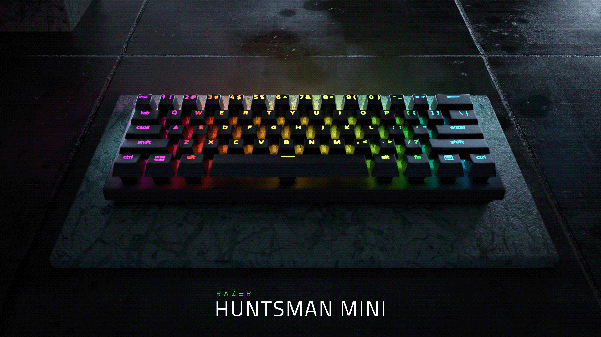
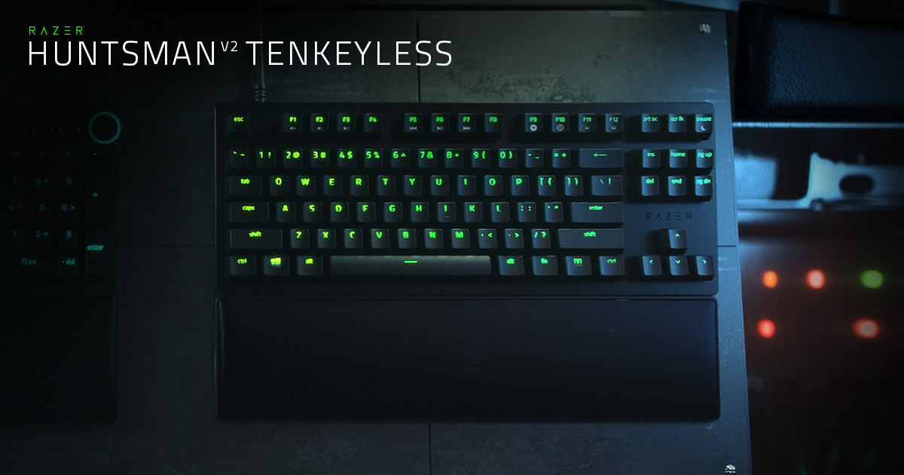

Razer Blackwidow V3 Hyperspeed

Available In 2 Switches Razer™ Green Mechanical Switch & Razer™ Yellow Mechanical Switch
| SWITCH TYPE | KEY FEEL | SIZES | LIGHTING | WRIST REST |
|---|---|---|---|---|
| Razer™ Green Mechanical Switch Razer™ Yellow Mechanical Switch |
Tactile and Clicky Linear and Silent |
65% | Razer Chroma™ RGB customizable backlighting with 16.8 million color options | None |
| ONBOARD MEMORY | MEDIA KEYS | PASSTHROUGH | CONNECTIVITY | KEYCAPS |
| Hybrid On-Board Memory and Cloud Storage – up to 5 profiles | None | None | Connect via Razer™ HyperSpeed Wireless (2.4 Ghz), Bluetooth, or USB-C | Doubleshot ABS |
| OTHERS | ||||
|
||||
Razer Huntsman Mini
Available In 2 Switches Razer™ Linear Optical Switch & Razer™ Clicky Optical Switch
| SWITCH TYPE | KEY FEEL | SIZES | LIGHTING | WRIST REST |
|---|---|---|---|---|
| Razer™ Linear Optical Switch Razer™ Clicky Optical Switch |
Light and Instant Light and Clicky |
60% | Razer Chroma™ customizable backlighting with 16.8 million color options | None |
| ONBOARD MEMORY | MEDIA KEYS | PASSTHROUGH | CONNECTIVITY | KEYCAPS |
| Hybrid onboard storage – up to 5 profiles | None | None | Wired - Detachable Type-C | Razer Doubleshot PBT Keycaps |
Razer Huntsman V2 Tenkeyless
Available In 2 Switches Razer™ Linear Optical Switch & Razer™ Clicky Optical Switch
| SWITCH TYPE | KEY FEEL | SIZES | LIGHTING | WRIST REST |
|---|---|---|---|---|
| Razer™ Linear Optical Switch Razer™ Clicky Optical Switch |
Light and Instant Light and Clicky |
Tenkeyless | Razer Chroma™ RGB customizable backlighting with 16.8 million color options | Yes |
| ONBOARD MEMORY | MEDIA KEYS | PASSTHROUGH | CONNECTIVITY | KEYCAPS |
| Hybrid onboard storage – up to 5 keybinding profiles | None | None | Wired - Detachable USB-C braided fiber cable | Razer Doubleshot PBT Keycaps |
| OTHERS | ||||
|
||||